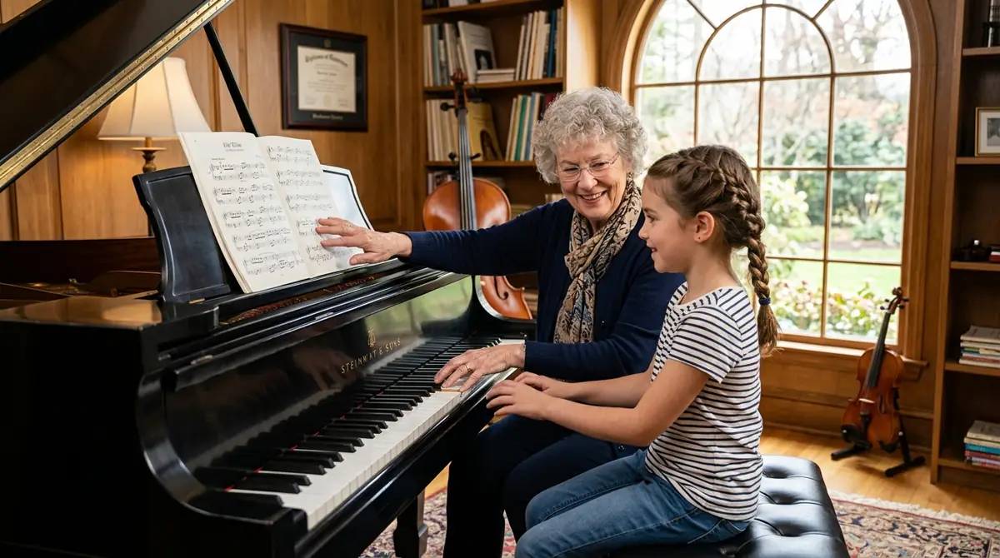

Loading
Learn from passionate, professional musicians
Royal Academy graduate with 15+ years teaching experience. Specializes in classical and jazz piano, exam preparation for all grades.
Former concertmaster of the City Symphony. Teaches Suzuki and traditional methods with a focus on building solid technique from day one.
Internationally acclaimed soprano with experience in opera, musical theatre, and contemporary vocal performance. Choir director for our academy ensemble.
Session guitarist who has toured internationally. Teaches acoustic, electric, and bass guitar across rock, blues, jazz, and classical styles.
Principal flautist with the National Orchestra. Brings 20 years of orchestral experience to her teaching, focusing on tone development and musicality.
Versatile drummer with experience in symphony orchestras, jazz bands, and recording studios. Makes rhythm accessible and fun for all ages.
Jazz saxophonist and classical clarinettist with a passion for teaching improvisation and helping students find their unique musical voice.
Conservatory-trained cellist and composer who integrates theory seamlessly into instrumental lessons. Published composer and active chamber musician.
Our tutors are committed to bringing out the musician in every student. Book your trial lesson today.
Our senior faculty brings decades of international performance experience directly into the practice room. We believe in mentorship that goes beyond reading notes on a page.
